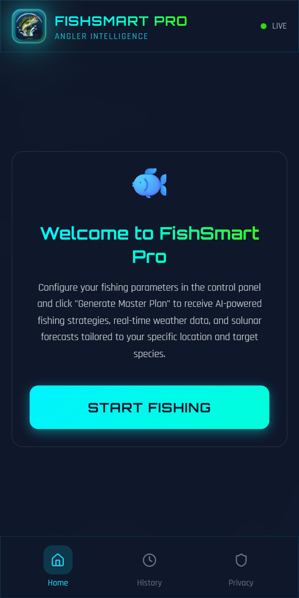
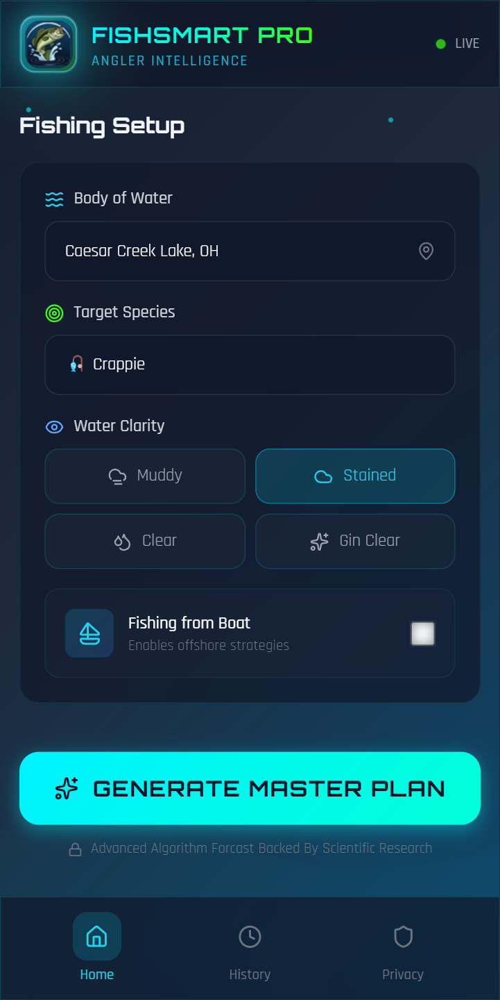
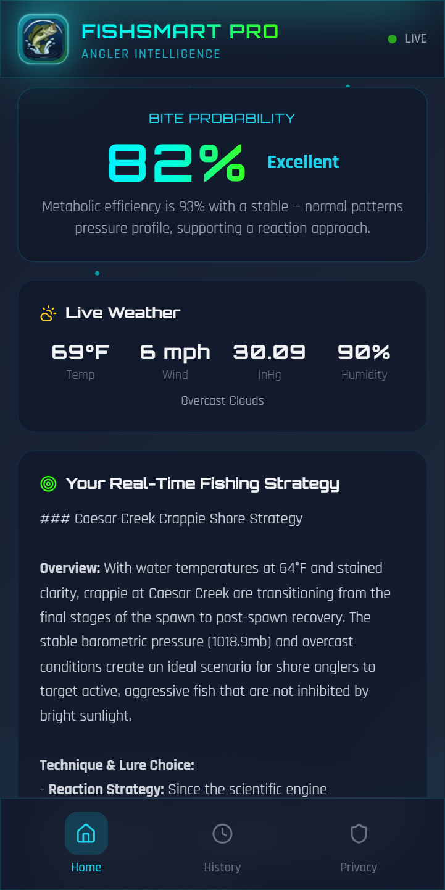
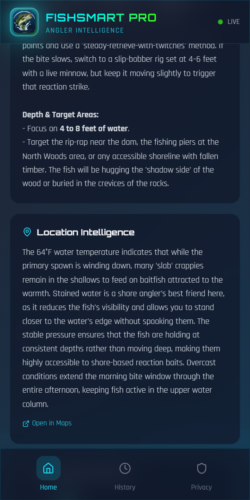
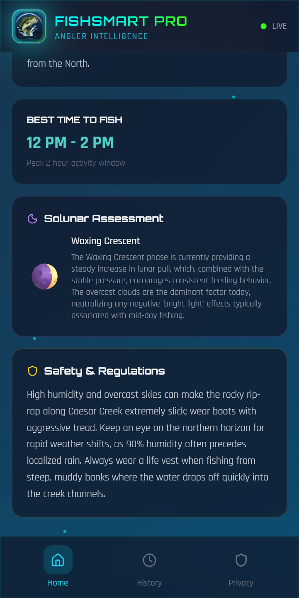

FishSmart Pro combines live environmental data with a multi-factor scientific engine and Google Gemini AI to produce detailed, species-specific fishing forecasts. No guessing. No spot burning. Just real science, explained.

Most fishing apps give you a meaningless score with no explanation — or crowdsource unreliable catch data that burns your secret spots. You're left guessing, and guessing is expensive.
You drive to the lake at the wrong time, fish through a dead bite, and waste gas, bait, and limited free time — all because you couldn't predict the conditions.
Fishbrain and similar apps crowdsource catch reports that expose your secret fishing holes to everyone. Social features put your privacy at risk by design.
Navionics charges $60–100+ per year for marine charts you don't need. Generic weather apps tell you the weather but not what it means for fish behavior.
Pick your location, target species, water body type, clarity, and what you're seeing on the water. Takes 30 seconds.
The scientific engine evaluates seven real environmental factors against species-specific biological models — before any AI touches it. You get a transparent 0–100 bite score.
Google Gemini AI translates the engine's output into a plain-language forecast with lure picks, match scores, and strategy tips. The science drives the AI — not the other way around.
Real tools built on real data — not gimmicks.
A scientific multi-factor scoring engine calculates the bite score from real data — pressure trends, metabolic efficiency, water temp, wind, clarity, and time of day. Every factor is transparent and explained.
Hourly bite activity derived from engine factors — not guessed by an LLM. Pinpoint the best fishing windows before you leave the house so you don't waste prime hours.
Real-time data from USGS monitoring stations — not estimates from air temperature. We show you the station name and distance for full transparency. No guessing.
Species-specific lure recommendations with match scores and reasoning. The engine knows which presentations work for which species under current conditions.
Bass, walleye, trout, pike, crappie, catfish and more — each with its own biological profile. The engine models how every species responds to conditions differently.
No social features. No catch sharing. No location tracking. No crowdsourced data. Your fishing spots stay yours. Privacy is a feature, not a setting you have to find.
Save up to 50 past forecasts per device. Export to JSON or CSV. Review patterns in what worked and build real knowledge over time — not just luck.
Install on any device from the web, or download from Google Play as a native Android app. Works offline with cached history. One codebase, every platform.
Most fishing apps either ask an AI to guess the forecast (unreliable, hallucination-prone) or show a magic number with no explanation. FishSmart Pro does neither.
A deterministic multi-factor engine calculates the bite score from real environmental data and species-specific biological models — derived from ichthyological research.
AI takes the structured, scientifically-grounded output and translates it into plain language with lure picks, match scores, and strategy tips.
A transparent, reproducible forecast you can trust. Every score traces back to real factors. No black boxes. No guessing.
Falling pressure triggers feeding instincts — it signals an approaching front. The trend matters more than the absolute number.
Live USGS station data. Fish are cold-blooded — their metabolism and willingness to feed are directly driven by water temp.
How close the current water temp is to the species' biological optimum. Too cold = sluggish. Too hot = stressed. Sweet spot = active feeding.
Light-to-moderate wind creates surface chop that breaks up light penetration, making fish less cautious. Strong wind suppresses feeding.
Overcast skies reduce light penetration, extending feeding windows beyond typical dawn/dusk peaks. Fish feel safer in diffuse light.
Stained water favors reaction baits (vibration/color). Clear water favors finesse presentations (natural/stealthy). Clarity drives lure choice.
Fish are most active during low-light periods (dawn/dusk). Midday typically sees reduced activity unless cloud cover or wind compensates.
Most apps estimate water temp from air temperature — wildly inaccurate. Air temp of 75°F could mean water temp of 60°F or 80°F depending on depth, flow, and weather. FishSmart Pro pulls live data from the same federal monitoring sensors used for water resource management. Full transparency. No estimates.

Set your conditions in 30 seconds

Every score explained factor-by-factor

12-hour activity forecast

Smart lure picks with reasoning
| Feature | FishSmart Pro | Fishbrain | Navionics | Weather Apps |
|---|---|---|---|---|
| Science-backed bite score | ✓ 7-factor engine | ✗ | ✗ | ✗ |
| Transparent reasoning | ✓ Every factor explained | ✗ | ✗ | ✗ |
| Live USGS water temp | ✓ Real station data | ✗ | ✗ | ✗ |
| Zero social / no spot burning | ✓ By design | ✗ Social-first | ✓ | ✓ |
| AI lure recommendations | ✓ With match scores | ✗ | ✗ | ✗ |
| Freshwater species-specific | ✓ 20+ species | ✓ Generic | ✗ Marine-focused | ✗ |
| Pricing | $29.99/yr | ~$60+/yr | $60–100+/yr | Free (no forecasts) |
| Free tier | ✓ 3 full forecasts/session | Limited | Trial only | N/A |
3 free full-power forecasts every session. No crippled features. No paywall on the science.
Join anglers who fish with data, not luck. Try 3 free forecasts right now — no signup, no credit card, no commitment.